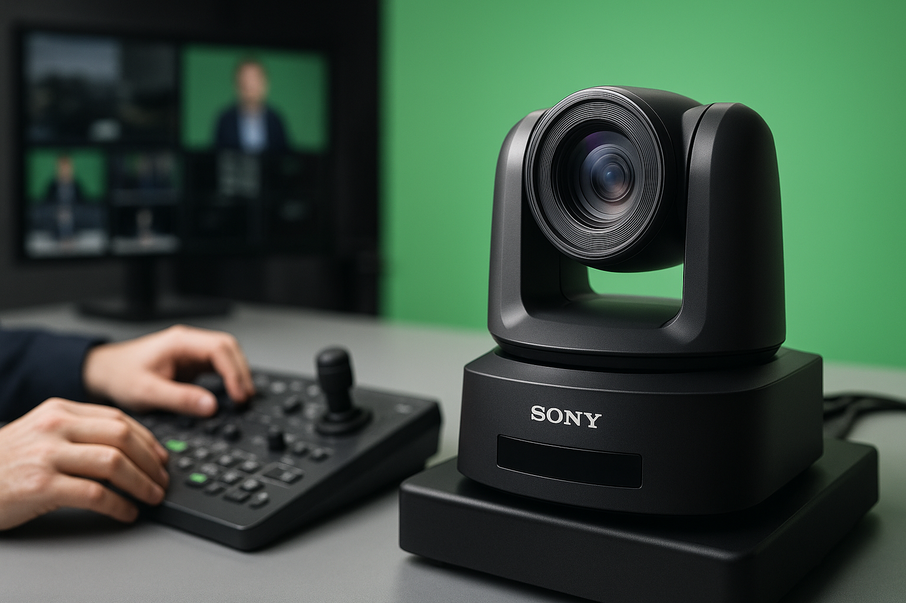

現在、動画コンテンツは「HD」から「4K」へと完全に移行しつつあります。特にライブ配信や音楽パフォーマンスにおいて、その解像度の差は視聴者の没入感に直結します。
1. 4K完全対応の配信システム
スタジオQの核となるのは、最新のBlackmagic ATEM Television Studio 4K8です。これにより、複数の4Kカメラを切り替えながら、YouTubeやZoomへの高画質配信が可能です。
さらに、SONY BRC-X400B（4K旋回カメラ）を活用すれば、少人数オペレーションでも動きのあるダイナミックなスイッチングを実現します。固定カメラだけでは表現できない、臨場感あふれる映像作りが可能です。

2. 音楽ライブに対応する音響・照明の融合
映像だけでなく、音楽へのこだわりも妥協しません。YAMAHA CHR12Mのフロアモニターを4台備え、演者が自分の音を正確に把握できる環境を整えています。
また、照明システムにはZero88 FLX S 24コンソールを導入。AMERICAN DJ e904ホリゾントライトや演出用照明を駆使し、楽曲の世界観に合わせた自由自在な光の演出が可能です。
3. ハイブリッド配信の可能性
双方向配信（Zoom等）と一方向配信（YouTube等）の両方に対応できるWeb Presenter 4Kを2台設置しています。
これにより、リモート登壇と現地パフォーマンスを組み合わせた、ハイブリッドなイベントもスムーズに進行できます。会場の熱気とオンラインの利便性を融合させた、新しいイベントの形をサポートします。
まとめ・CTA
テクノロジーの進化を、あなたの表現の武器に。最新4K機材による配信のご相談をお待ちしております。